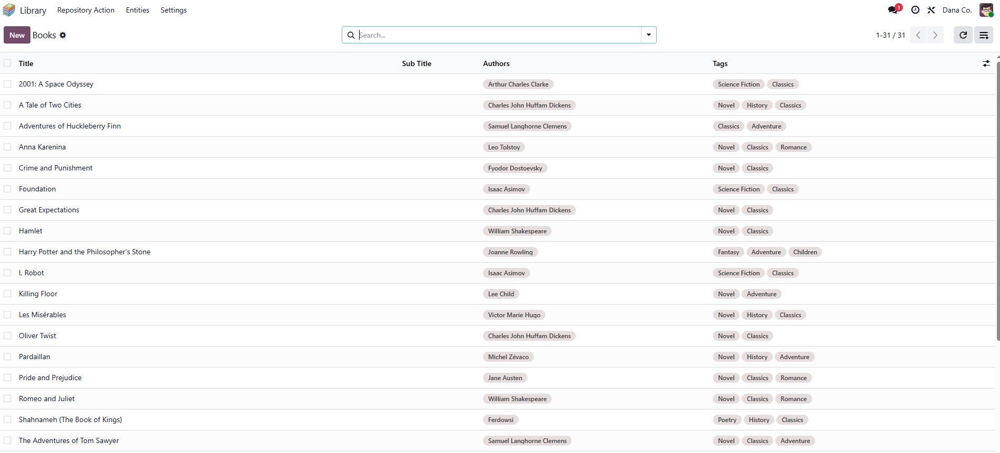
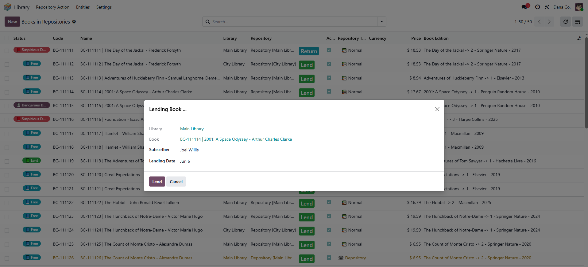
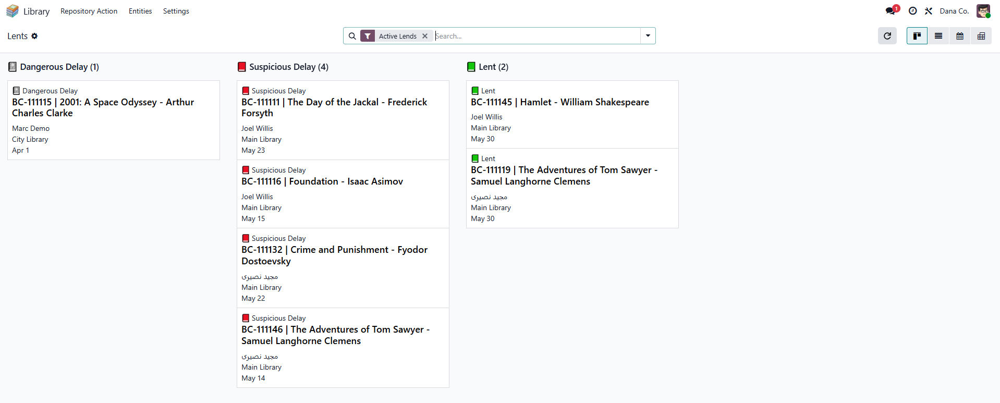
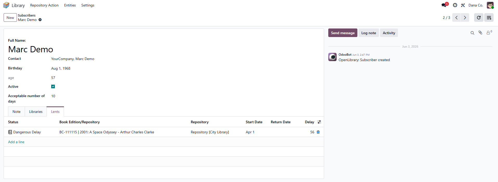

📖 Overview
Open Library is a professional library management module for Odoo 19 that helps libraries, schools, universities, and organizations manage their book collections, members, and lending operations efficiently. The module provides a complete workflow from book acquisition to member registration and lending tracking.
✨ Key Features
📚 Book Management
- Multi-library support
- Multi-repository support
- Book and author management
- Book editions tracking
- Publisher management
- Tags & genres categorization
- Unique book copy codes
👥 Member Management
- Member registration
- Membership tracking
- Automatic age calculation
- Member status management
- Contact integration
- Multi-library memberships
🔄 Lending Operations
- Easy book borrowing
- Automatic due date calculation
- Return processing with late fees
- Configurable delay thresholds
- Complete lending history
- Real-time status tracking
📊 Views & Dashboards
- List, Kanban & Calendar views
- Advanced search filters
- Detailed form views
- Comprehensive reports
- Activity tracking
🔧 Technical Features
- Multi-company support
- Granular security groups
- Configurable system parameters
- Mail & activity integration
- Full API access
🌍 Languages
- English (default)
- Persian / Farsi (فارسی)
- Easily translatable to other languages
👥 User Groups & Access Rights
📖 Library User
Basic read-only access to view books and lending records.
Perms: Read only
🔧 Library Employee
Operational access for daily library tasks.
Perms: Create, edit, process lending
⭐ Library Manager
Full access to all features within a library.
Perms: Complete control
🏢 Libraries Director
Executive access across all libraries and companies.
Perms: Multi-library oversight
🚀 Installation
Prerequisites
- Odoo 19.0 (Community or Enterprise)
- Python 3.10 or higher
Installation Steps
- Copy the module to your addons directory:
cp -r openlibrary /path/to/odoo/addons/
- Update the module list in Odoo (Apps → Update Modules List)
- Search for "Open Library" and click Install
Demo Data Installation
odoo-bin -c odoo.conf -d your_database -i openlibrary --demo=all
⚙️ Configuration
After installation, configure the module:
- Go to Settings → Open Library → Settings
- Configure delay thresholds:
- Warning Delay Threshold: Days after which a book is considered "Delayed" (default: 3)
- Suspicious Delay Threshold: Days after which status becomes "Suspicious" (default: 30)
- Assign user groups to your staff members
📖 Usage Guide
📕 Adding Books
- Go to Open Library → Books
- Click Create
- Fill in book information (Title, Author, Publisher, ISBN, Tags, Summary)
- Save the record
📝 Registering Members
- Go to Open Library → Subscribers
- Click Create
- Enter member information (Name, Birthday, Contact details)
- Save the record (age is automatically calculated)
🔄 Processing Lending
- Go to Open Library → Lending
- Click Lend
- Select book copy and subscriber
- Due date is automatically calculated based on member's allowed days
- Click Confirm
📬 Processing Returns
- Go to Open Library → Lending
- Find the active lend record
- Click Return
- The system automatically calculates delay days and updates book status
📸 Screenshots




Screenshots will appear here after adding images to static/description/
📞 Support
🐛 Issues & Bug Reports
Please report issues on GitHub: github.com/madjidnasiri/openlibrary
💬 Community Support
Join the Odoo Community Association (OCA) for community support.
📧 Commercial Support
For professional support, custom development, or implementation assistance:
- Email: madjidnasiri@gmail.com
- Website: www.afsannama.ir
📄 License
GNU Lesser General Public License v3 (LGPL-3)
This program is free software: you can redistribute it and/or modify it under the terms of the GNU Lesser General Public License as published by the Free Software Foundation, either version 3 of the License, or (at your option) any later version.
This program is distributed in the hope that it will be useful, but WITHOUT ANY WARRANTY; without even the implied warranty of MERCHANTABILITY or FITNESS FOR A PARTICULAR PURPOSE. See the GNU Lesser General Public License for more details.
📝 Changelog
Version 1.0.0 (2026-06-06)
- Initial release for Odoo 19
- Complete library management features
- Multi-library and multi-company support
- Full Persian (Farsi) translation